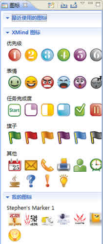
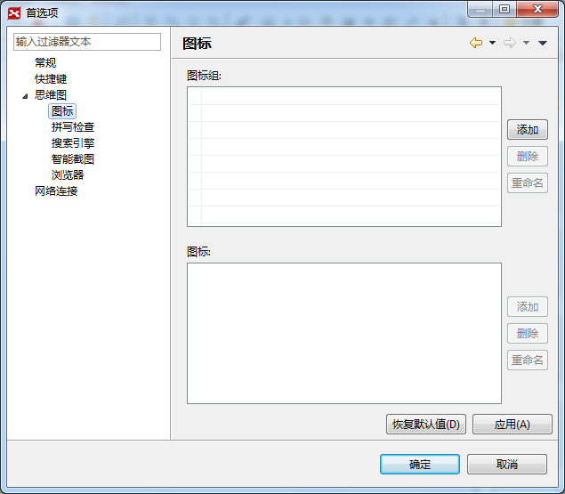
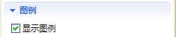

图标
图标是具有某些特殊含义的标准图片，在项目管理、日常计划、以及任务管理等活动中有广泛的应用。XMIND提供了一系列经常使用的图标。而且，您还可以创建您自己特有的图标，并且使用起来非常方便。方法如下：
按照下列步骤添加图标：
- 选中一个或者多个主题；
- 打开 图标视图；
- 点击合适的图标即可完成添加。
- 或者选中主题后，使用快捷键“Ctrl+1，2，3，4，5，6”直接添加优先级图标。

按照下列步骤删除添加的图标：
- 选中主题；
- 选中主题中添加的图标；
- 下面两种操作均可完成删除：
- 点击键盘上的“Delete”键。
- 打开鼠标右键菜单，选择“删除”。
按照下列步骤添加您自己的图标：
- 打开 图标视图；
- 点击视图工具栏上的“添加图标组”的按钮打开添加图标的首选项对话框；
- 点击图标组右边的“添加”按钮来添加新的图标组；
- 为新添加的图标组命名，调整顺序；
- 选中图标组，点击图标框右边的“添加…”按钮；
- 选择您希望使用的图片添加至XMIND；
- 通过右边的按钮，您可以删除，重命名以及调整添加的图标的位置；
- 点击“应用”完成添加；
- 您可以在图标视图中看见您自己的图标。

图例
图例用来显示当前思维图中使用的所有图标及其含义。您可以直接在此对图标的含义进行修改。
按照下列步骤打开图例：
- 选中当前图；
- 打开 属性视图；
- 激活“显示图例”；
- 移动鼠标选择摆放的位置；
- 在图例中双击某个图标即可修改它的名字。

注意：您可以将图例移动至图的任意位置。
您可能还对以下内容感兴趣……